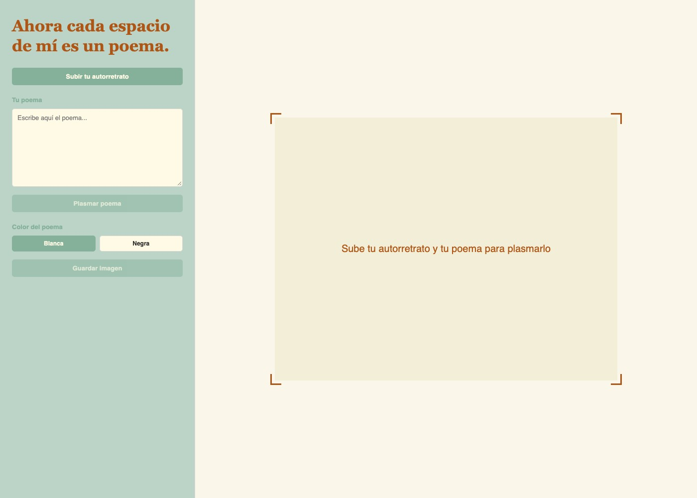

← Volver a proyectos
Cada espacio de mí es un poema
Web · Poesía visual · Efecto visual · 2026Esta web surge de la necesidad de impregnarme visualmente de la poesía. A partir del ejercicio de realizar autorretratos, desarrollé una propuesta visual que posteriormente fue programada en p5.js y convertida en una página web.
